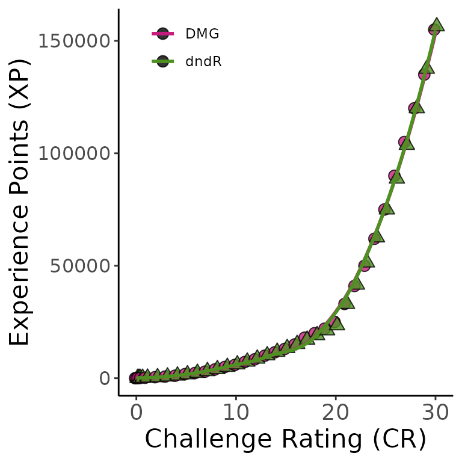

dndR versus DMG Comparisons
See below for some comparisons between my functions and the Dungeon Master’s Guide statistics they attempt to recapitulate.
cr_convert vs. DMG
cr_convert is embedded in the monster_stats
function and is what allows that function to handle both CR and XP
inputs. The DMG specifies the XP value of a monster of any CR from 0 to
30 so cr_convert uses the formula of that line to avoid
querying the table for this conversion.
Below is the comparison of the DMG’s XP-to-CR curve and the one
produced by cr_convert.

xp_pool vs. DMG
The DMG specifies the XP threshold per player for a given
difficulty while my function asks for the average player level
and the party size. This difference keeps the function streamlined and
flexible for parties of any size. If average party level is an integer,
the DMG’s table for the encounter XP to player level is used. Otherwise,
xp_pool uses the formula for the line defining the XP-party
level curve implicit in the DMG’s table. This has the benefit of being
able to handle parties where not all players are the same level.
Below is a comparison of the DMG’s XP-to-party level curve versus the
one obtained by xp_pool.